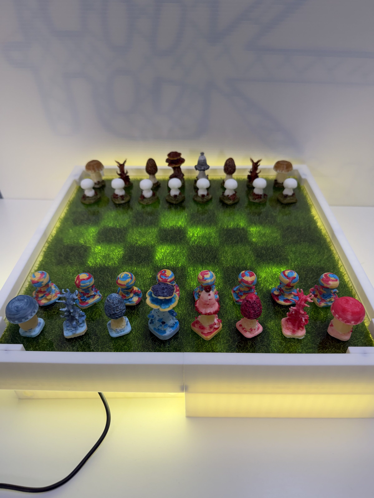
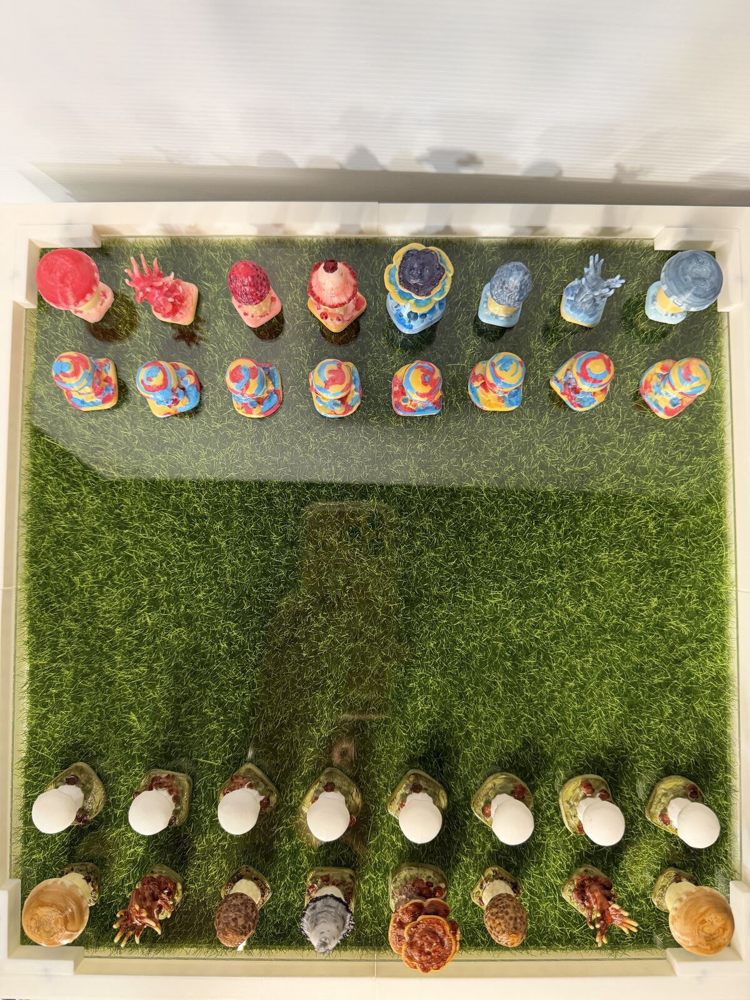
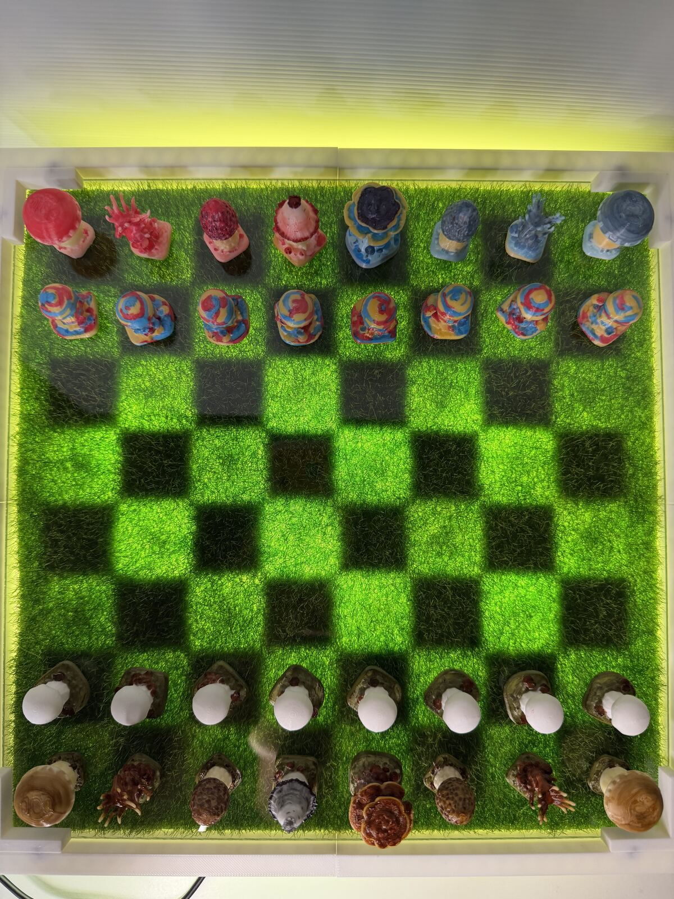

六種棋格角色

Chesshroom 是一套以真菌為主題的西洋棋。七種菇類化作六種棋格角色 ── 從莊重的靈芝國王，到成群冒出的小圓蘑菇兵卒，每一枚都先與 AI 反覆描述、生成形象，再經影像轉 3D、列印與打磨而成。
棋盤鋪上草地、覆以壓克力板。底部燈板點亮時，黑白棋格從層層之間浮現；熄燈時，它仍是一方安靜、可以隨手對弈的棋盤。
燄燈時，棋盤是一整片安靜的草地；當底部燈板亮起，黑白棋格便從草地下透出。拖動分隔線比較兩種狀態。

